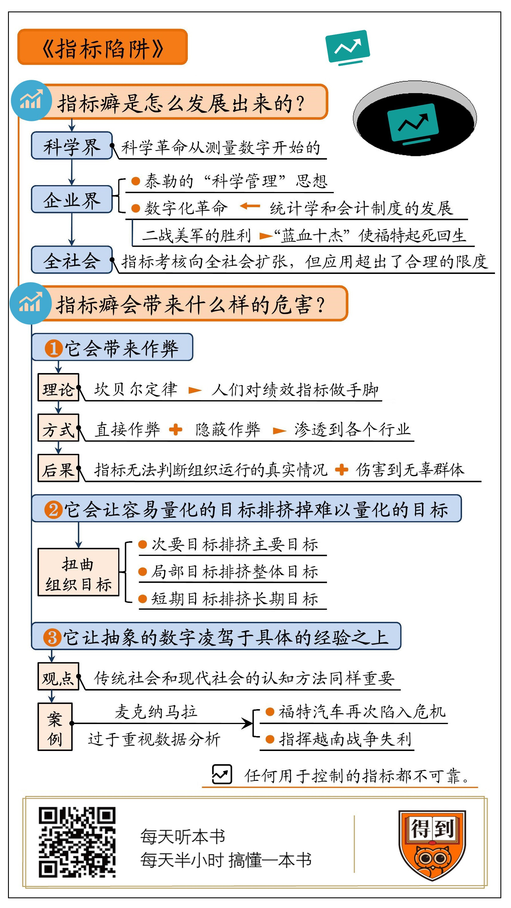
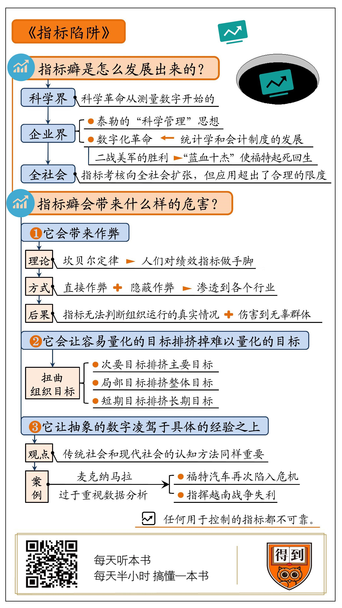

指标陷阱
指标癖会带来什么样的危害？
- 作弊
- 让容易量化的目标排挤掉难以量化的目标
- 让抽象的数字凌驾于具体的经验之上
经典案例：
「蓝血十杰」在二战中利用统计学和会计制度发挥了关键做用，战后他们全体加入了福 特，让福特起死回生。又由于对数据的过度依赖，福特再次陷入危机。麦克·纳马拉作 为「蓝血十杰」一员，于1961年辞去福特总裁职位，成为国防部部长，直接指挥越南战 争。1968年，因指挥越战不利，第二任任期未满就黯然下课了。

指标癖会带来什么样的危害？
经典案例：
「蓝血十杰」在二战中利用统计学和会计制度发挥了关键做用，战后他们全体加入了福 特，让福特起死回生。又由于对数据的过度依赖，福特再次陷入危机。麦克·纳马拉作 为「蓝血十杰」一员，于1961年辞去福特总裁职位，成为国防部部长，直接指挥越南战 争。1968年，因指挥越战不利，第二任任期未满就黯然下课了。

Created: 2021-07-11 Sun 15:42